Your smile
the one that makes a normal day feel a little softer.
For Pate, with love 01 / 01
Some pictures. One little story. Us.
open our chapter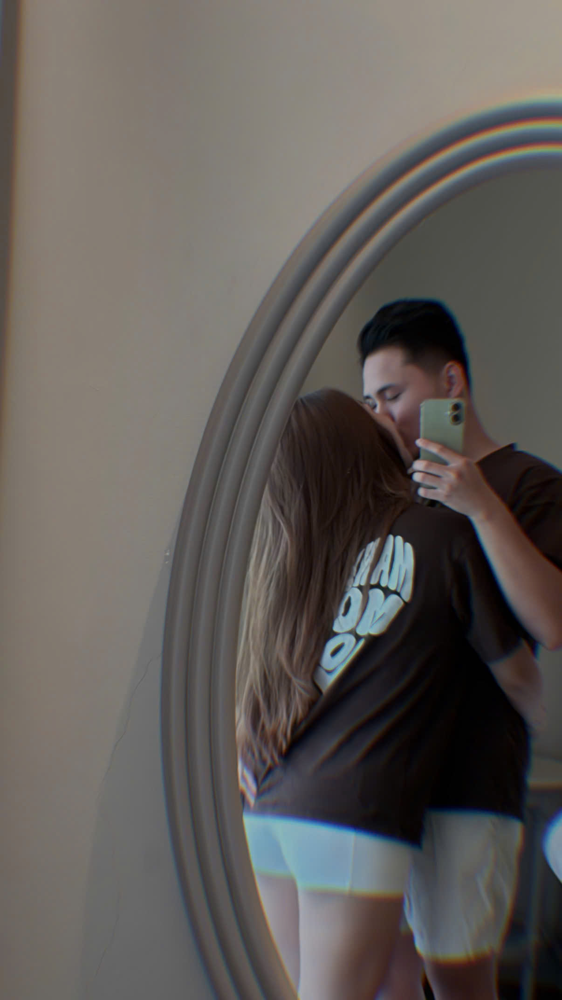
Somehow, one month already feels like a little world of its own.
our first chapter
A collection of ordinary places that became ours, simply because we were there together.
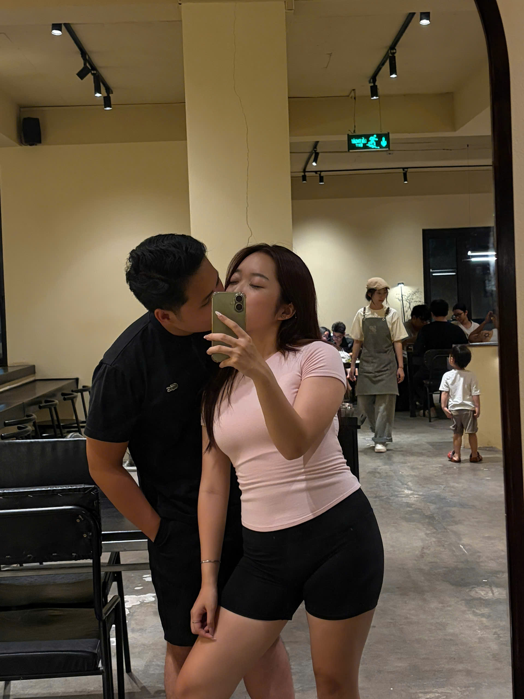
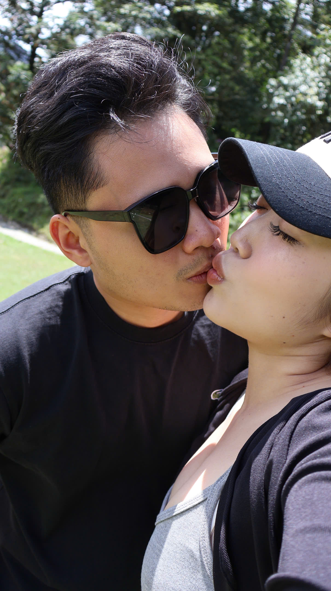
Different city
same feeling.
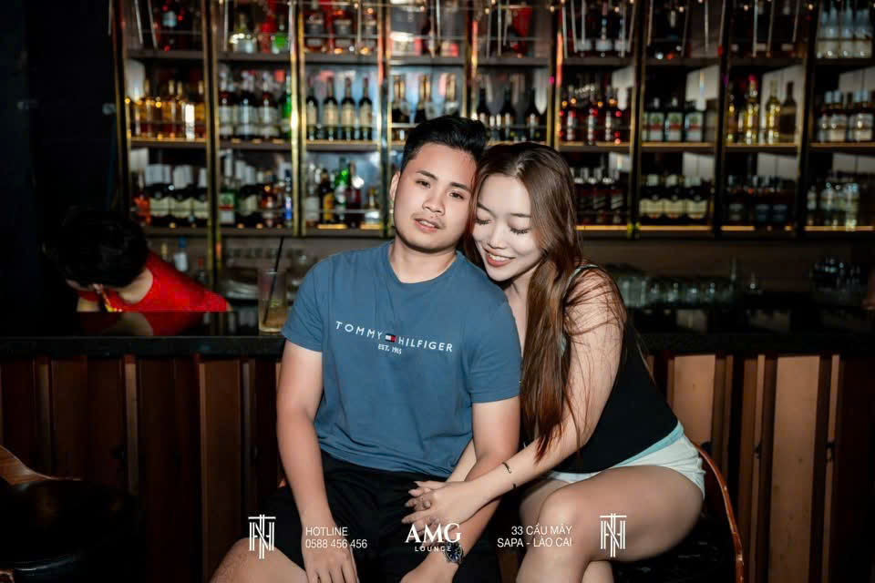
One place, two people,
a thousand small details.
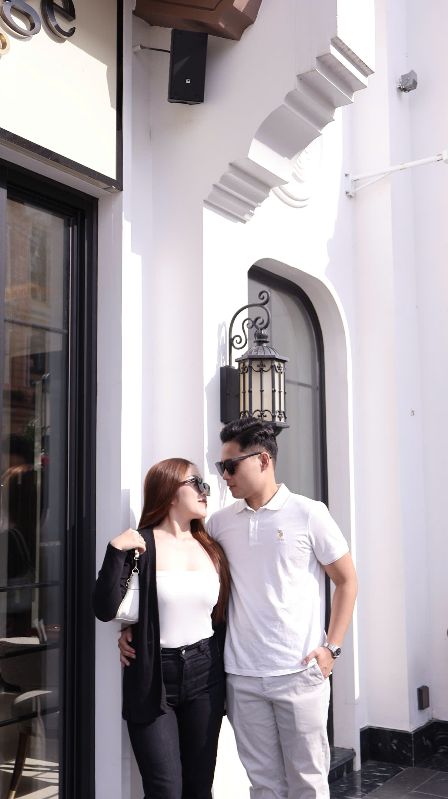
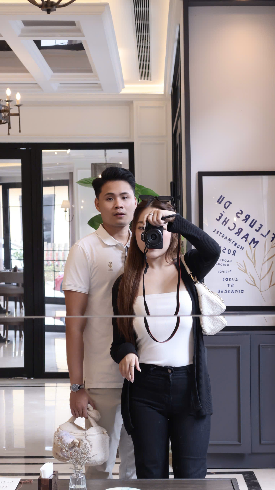
the world looks better
when we are in it.
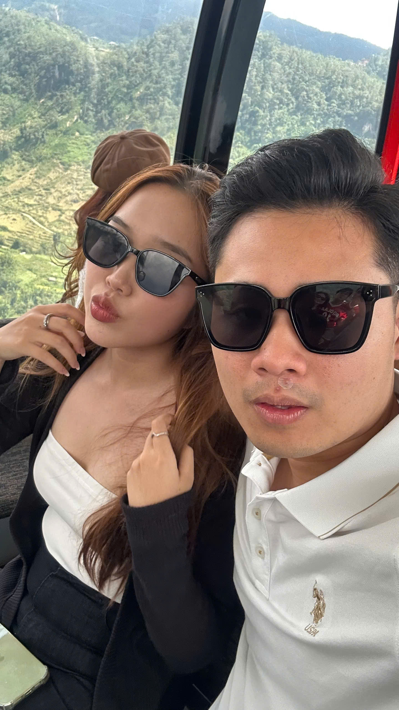
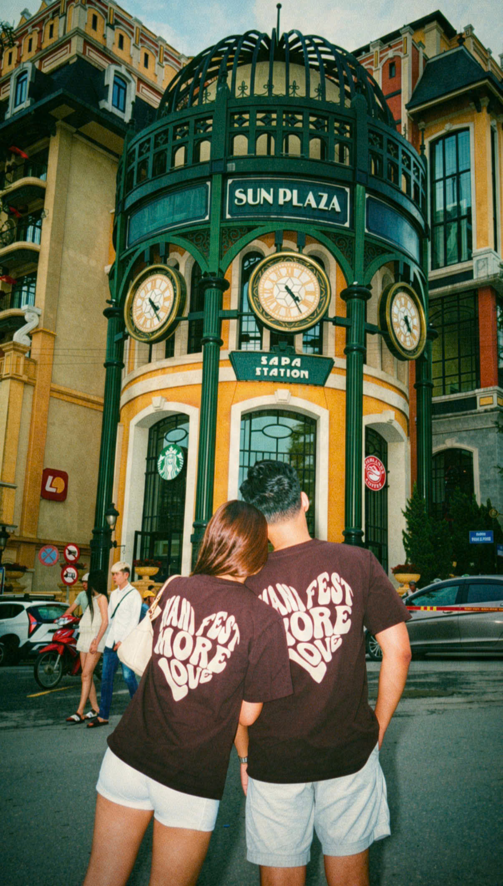
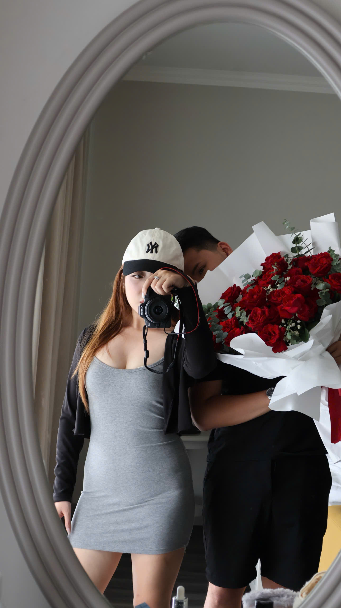
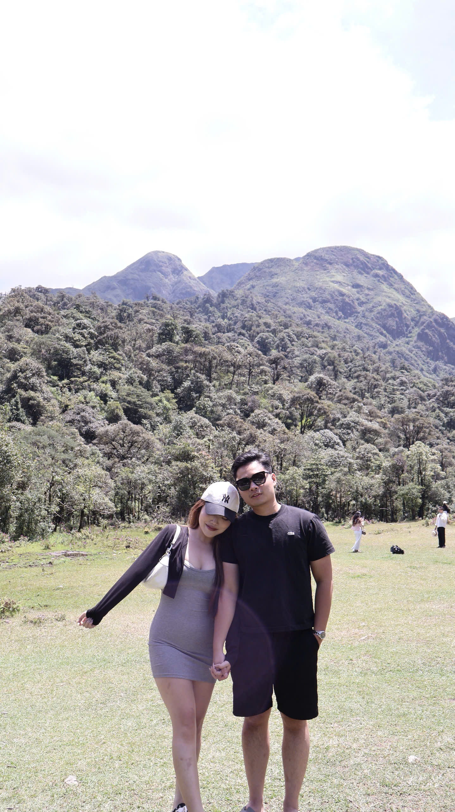
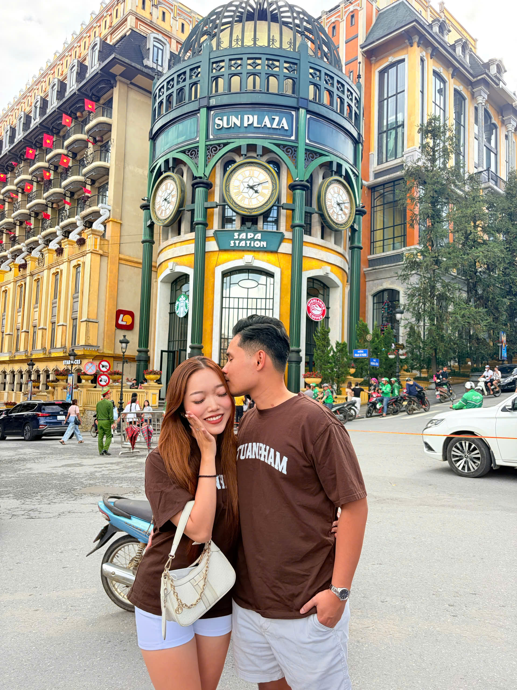
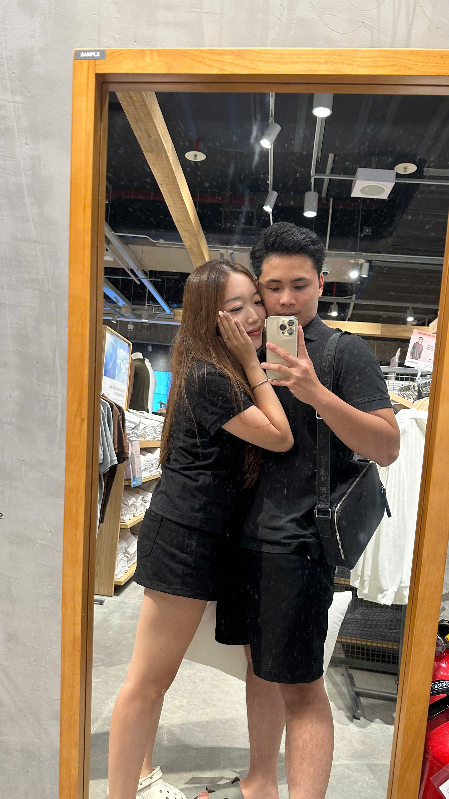
frames from days worth keeping
Somewhere between
play and everyday.
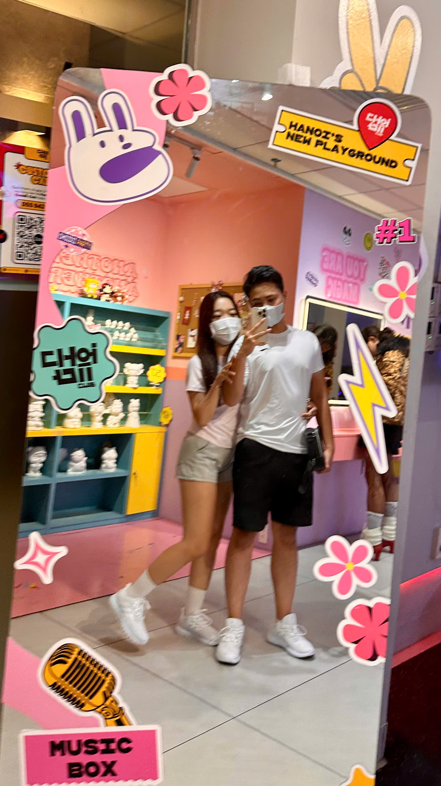
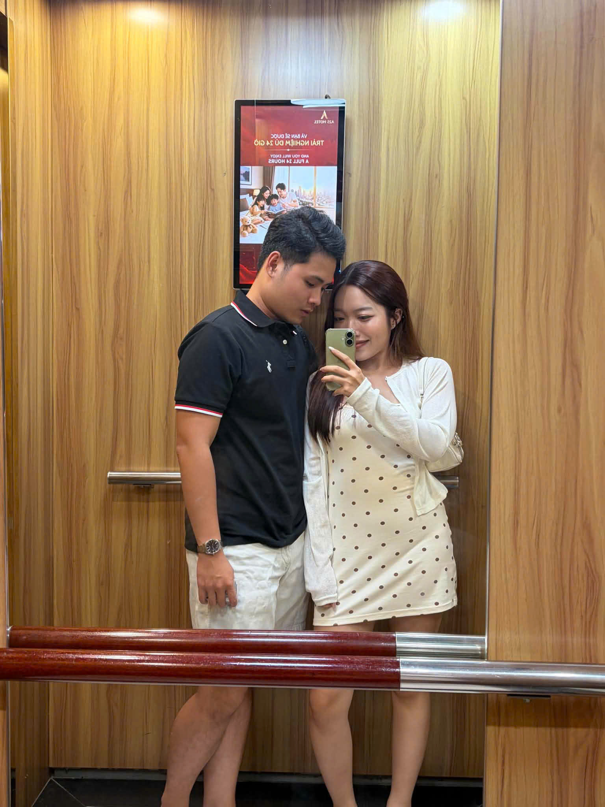
same two people,
new memories.
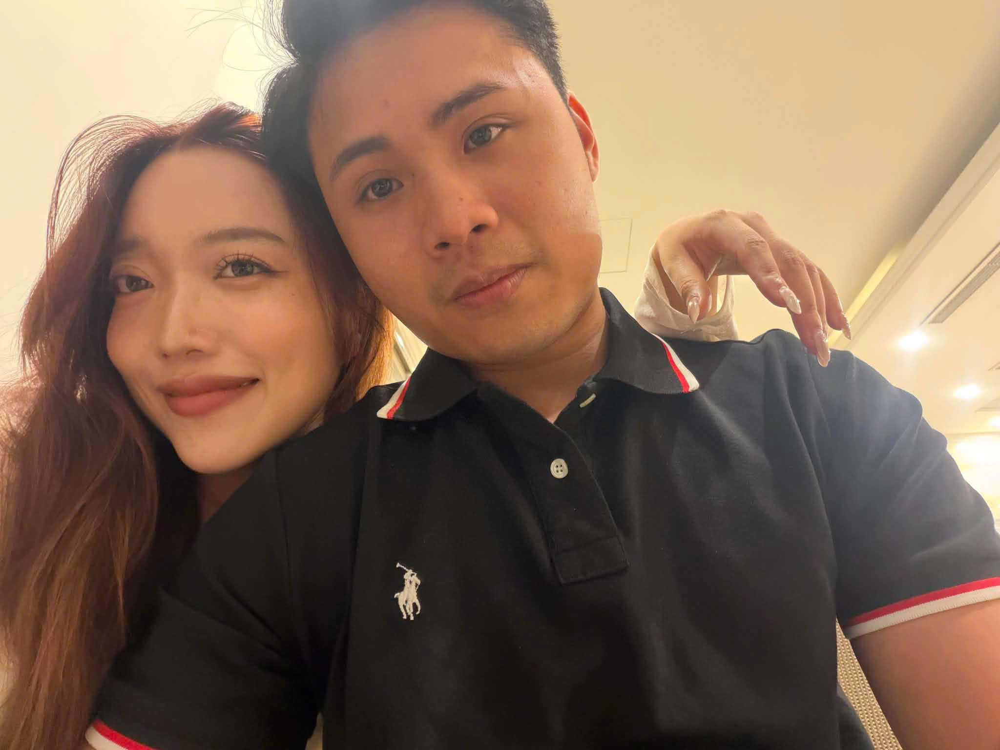
It is the small things
I keep coming back to.
a few things
the one that makes a normal day feel a little softer.
it was so cute.
enjoying chilling with you.
somehow, that is always enough.
a little letter
Thank you for being part of my first chapter with you.
One month of little moments, big smiles, and a feeling I want to keep choosing every day.
Here is to the places we have been, and all the places still waiting for us.
our little universe
one month down, a lot more to go.
tvap × pate